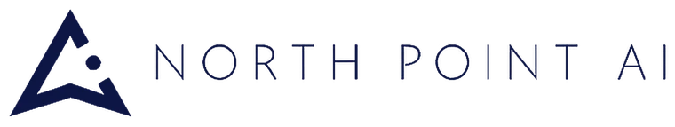

Engineering expertise, enhanced by intelligent technology.
The complexity of modern infrastructure projects demands more effective ways to manage information, assess performance and identify emerging risks.
At Anchor Point, we recognize the role that technology can play in strengthening professional engineering and project management.
Through the integration of modern digital tools and AI-assisted analysis, we aim to improve the efficiency, consistency and visibility of our professional workflows.
Our approach brings together engineering judgment, analytical capabilities and structured project information.
Our technology-enabled capabilities
Project Document Review
Digital tools can assist in reviewing contracts, drawings, technical submissions and project documentation to improve information organization and identify potential inconsistencies.
Schedule & Performance Analysis
Analytical tools can help assess project schedules, identify emerging delays and support more effective monitoring of implementation progress.
Quantity & Payment Review
Technology-assisted analysis can support the examination of quantities, payment documentation and project records, subject to professional verification.
Infrastructure Monitoring
Digital systems can support the organization and interpretation of infrastructure condition information and maintenance priorities.
Reporting & Decision Support
Structured project information can improve the preparation of reports, management summaries and decision-support materials.
Professional judgment remains at the centre of every engagement.
Technology supports our analytical processes. It does not replace professional engineering responsibility.
Our approach emphasizes the review, verification and interpretation of analytical outputs by appropriately qualified professionals before they are used in engineering advice or project decisions.
Combining engineering and technology expertise.
Anchor Point works in partnership with North Point AI, a technology company with capabilities in artificial intelligence, data systems and digital solutions.
The partnership provides a foundation for integrating advanced analytical and digital capabilities into engineering and infrastructure management workflows.
Anchor Point remains responsible for its engineering consultancy services, while North Point AI contributes technology capabilities within the scope of the partnership.

Let’s discuss your next infrastructure project.
Whether you are planning a new development, managing an ongoing project or seeking independent technical and project advisory support, our team would welcome the opportunity to understand your requirements.